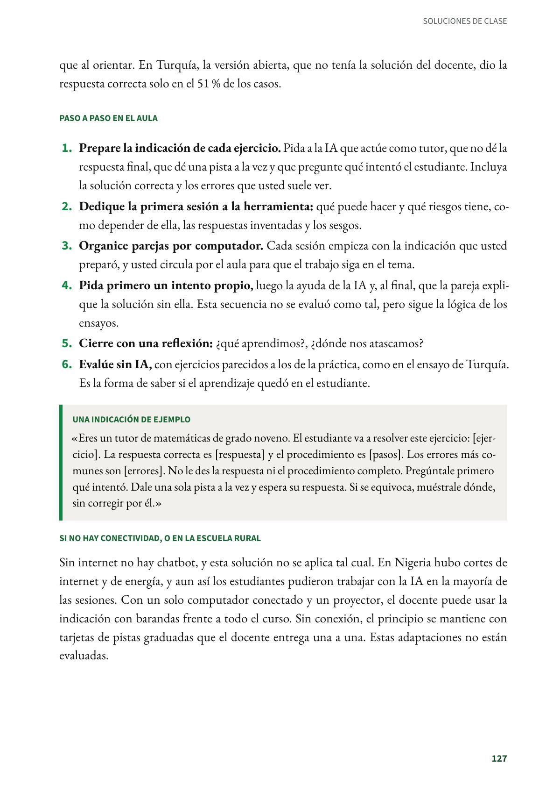
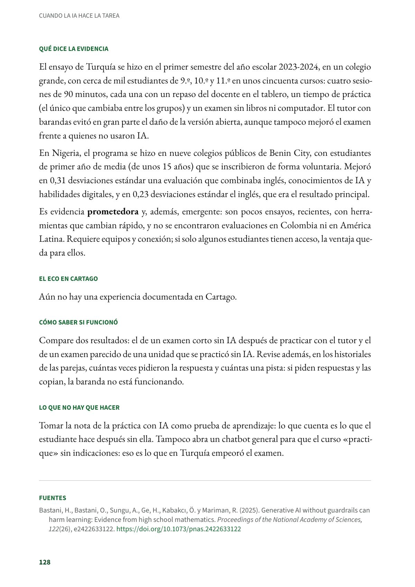

Pistas, no respuestas: la IA como tutor con barandas
Usar un chatbot de IA como tutor y no como máquina de respuestas. Secundaria y media. Evidencia prometedora.
PDF · 4 págs. · 81 KBEn resumen
- Evidencia: prometedora.
- Para quién: Secundaria y media. Matemáticas, inglés y otras áreas con ejercicios de práctica.
- Tiempo: En los ensayos, cuatro sesiones de 90 minutos (Turquía) o hasta dos sesiones de hora y media por semana durante seis semanas (Nigeria).
- Materiales: Un computador con internet por pareja, una herramienta de IA aprobada por la institución y las indicaciones que prepara el docente.
- De dónde viene: Ensayos aleatorizados en Turquía (Universidad de Pensilvania) y en Nigeria (Banco Mundial).
Qué es
Usar un chatbot de IA como tutor y no como máquina de respuestas. El docente le da instrucciones (las barandas) para que ofrezca pistas y haga preguntas sin entregar la solución, y le suministra la solución correcta y los errores comunes del ejercicio, para que no se equivoque al orientar. En Turquía, la versión abierta, que no tenía la solución del docente, dio la respuesta correcta solo en el 51 % de los casos.
Paso a paso en el aula
- Prepare la indicación de cada ejercicio. Pida a la IA que actúe como tutor, que no dé la respuesta final, que dé una pista a la vez y que pregunte qué intentó el estudiante. Incluya la solución correcta y los errores que usted suele ver.
- Dedique la primera sesión a la herramienta: qué puede hacer y qué riesgos tiene, como depender de ella, las respuestas inventadas y los sesgos.
- Organice parejas por computador. Cada sesión empieza con la indicación que usted preparó, y usted circula por el aula para que el trabajo siga en el tema.
- Pida primero un intento propio, luego la ayuda de la IA y, al final, que la pareja explique la solución sin ella. Esta secuencia no se evaluó como tal, pero sigue la lógica de los ensayos.
- Cierre con una reflexión: ¿qué aprendimos?, ¿dónde nos atascamos?
- Evalúe sin IA, con ejercicios parecidos a los de la práctica, como en el ensayo de Turquía. Es la forma de saber si el aprendizaje quedó en el estudiante.
Una indicación de ejemplo
«Eres un tutor de matemáticas de grado noveno. El estudiante va a resolver este ejercicio: [ejercicio]. La respuesta correcta es [respuesta] y el procedimiento es [pasos]. Los errores más comunes son [errores]. No le des la respuesta ni el procedimiento completo. Pregúntale primero qué intentó. Dale una sola pista a la vez y espera su respuesta. Si se equivoca, muéstrale dónde, sin corregir por él.»
Si no hay conectividad, o en la escuela rural
Sin internet no hay chatbot, y esta solución no se aplica tal cual. En Nigeria hubo cortes de internet y de energía, y aun así los estudiantes pudieron trabajar con la IA en la mayoría de las sesiones. Con un solo computador conectado y un proyector, el docente puede usar la indicación con barandas frente a todo el curso. Sin conexión, el principio se mantiene con tarjetas de pistas graduadas que el docente entrega una a una. Estas adaptaciones no están evaluadas.
Qué dice la evidencia
El ensayo de Turquía se hizo en el primer semestre del año escolar 2023-2024, en un colegio grande, con cerca de mil estudiantes de 9.º, 10.º y 11.º en unos cincuenta cursos: cuatro sesiones de 90 minutos, cada una con un repaso del docente en el tablero, un tiempo de práctica (el único que cambiaba entre los grupos) y un examen sin libros ni computador. El tutor con barandas evitó en gran parte el daño de la versión abierta, aunque tampoco mejoró el examen frente a quienes no usaron IA.
En Nigeria, el programa se hizo en nueve colegios públicos de Benin City, con estudiantes de primer año de media (de unos 15 años) que se inscribieron de forma voluntaria. Mejoró en 0,31 desviaciones estándar una evaluación que combinaba inglés, conocimientos de IA y habilidades digitales, y en 0,23 desviaciones estándar el inglés, que era el resultado principal.
Es evidencia prometedora y, además, emergente: son pocos ensayos, recientes, con herramientas que cambian rápido, y no se encontraron evaluaciones en Colombia ni en América Latina. Requiere equipos y conexión; si solo algunos estudiantes tienen acceso, la ventaja queda para ellos.
El eco en Cartago
Aún no hay una experiencia documentada en Cartago.
Cómo saber si funcionó
Compare dos resultados: el de un examen corto sin IA después de practicar con el tutor y el de un examen parecido de una unidad que se practicó sin IA. Revise además, en los historiales de las parejas, cuántas veces pidieron la respuesta y cuántas una pista: si piden respuestas y las copian, la baranda no está funcionando.
Lo que no hay que hacer
Tomar la nota de la práctica con IA como prueba de aprendizaje: lo que cuenta es lo que el estudiante hace después sin ella. Tampoco abra un chatbot general para que el curso «practique» sin indicaciones: eso es lo que en Turquía empeoró el examen.
Fuentes
Bastani, H., Bastani, O., Sungu, A., Ge, H., Kabakcı, Ö. y Mariman, R. (2025). Generative AI without guardrails can harm learning: Evidence from high school mathematics. Proceedings of the National Academy of Sciences, 122(26), e2422633122. doi.org
De Simone, M., Tiberti, F., Barron Rodriguez, M., Manolio, F., Mosuro, W. y Dikoru, E. J. (2025). From chalkboards to chatbots: Evaluating the impact of generative AI on learning outcomes in Nigeria (Policy Research Working Paper 11125). Banco Mundial. doi.org
Así se ve en el libro
4 páginas

